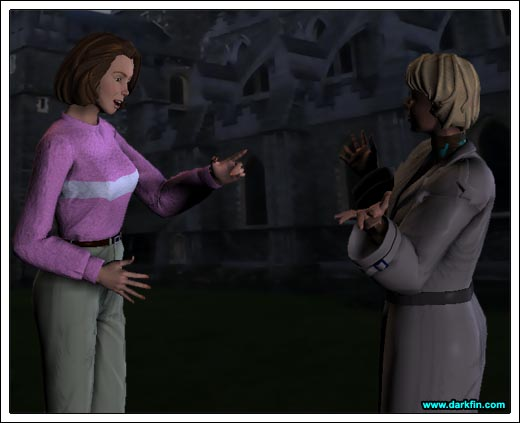
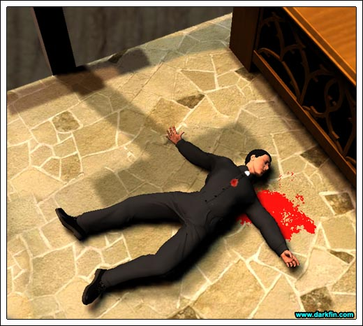

Griffin And I can assure you, ladies and gentlemen, I am fine... a little unsettled but fine...
KJ Did I miss anything?
Erika A vintage whine from Grif - what are you doing here?
KJ I had some extra time and thought I'd swing by for company morale, that kind of thing - where's dad?
Erika He and Doug had some real business to take care of
Griffin (Strutting around the employees) The good news in all of this is that nothing of importance, work-wise, was taken
Erika Heh, he only lost some money and a watch - both of which he can easily replace... his pride is another thing
KJ How did you know?
Erika Know what?
KJ Griffin didn't want anyone to know what was taken from him - he didn't even file a police report
Erika (Catching herself) I've known the man, in every way, since we were born - I can easily deduce what he's hiding... and he's now wearing the watch I gave him three Christmases ago
KJ (Smirking) Damn, Sis, you are in the wrong profession - you should be a detective
Erika (Raising an eyebrow) I'm sure law enforcement would just love to have me
Griffin (Banging his fist down on a desk) And I promise every one of you that this kind of harrowing experience will NOT happen again!
Erika (Under her breath) PLEASE, Griffin, grow a spine
KJ (Hearing what she said) Cut him some slack, Rik, you weren't there - it was pretty nasty the way he was tied up, and it could have been a lot worse
Erika How's the security guard doing?
KJ Better... he has a moderate concussion and the details are still fuzzy as to what went down
Erika He didn't see his attacker?
KJ No... at least not a clear face - he mentioned something about a hood
Erika Huh... well, I suppose that's typical for a robbery
KJ What I don't understand is why wait until Griffin was in a high security building? - it would have been easier to just jack him in a dark parking lot or something
Erika Obviously, the building wasn't secure enough
KJ I know, that's why I initially thought it was an inside job, someone trying to pirate corporate secrets
Erika What changed your mind?
KJ Griffin - he swears to me that nothing was touched... she went right for his watch and money
Erika (Coughing) SHE?
KJ Yeah, he definitely said it was a woman's voice although she tried to disguise it... he's not sure but he thinks he's heard it before
Erika (Stiffening) Really
Griffin (Concluding his address) Once again, we deeply appreciate and value your continued loyalty to Meeramar, I am more than confident that this was an isolated incident and it is indeed safe to come to work... thank you and goodnight!
KJ (Flipping open his cell phone and dialing) Hey, Morrigan, it's Kage - look, I'm so sorry Isaacson was a jerk tonight - how about the two of us going for a hike this weekend? - call me back, 'bye!
Erika What happened with Zach?
KJ We were all having a good time until Eyes started ragging on her about not drinking beer - wow, I'll tell ya, she sure shut everyone up and slaughtered the happy mood with her response!
Erika (Impatient) WELL?
KJ Hmm?
Erika What did she say?
KJ Oh... it's a long, ugly story - let me try to sum it up in a sentence... she was involved in a drunk driving accident when she was a kid, her brother was killed and her mom's head ended up in her lap, something about Neil Diamond, and beer was the root cause
Erika DEAR GOD
KJ I know, I thought she was joking at first... you know how writers love to tell stories... but I recognized from the expression on her face that she wasn't
Erika Did she leave right after that?
KJ Pretty much - Gracie said she took off for Saint Brendan's... probably to pray for some new friends
Erika (Getting up) You know what, I forgot to check with Shelby on some lab results, please tell Grif...
Griffin You can tell me yourself, Rikka
Erika I apologize but I must get going
Griffin (Grabbing her elbow) Whatever it is will have to wait
Erika (Snapping it back) Excuse me?
Griffin We have some business to take care of
Erika Look, I was here all evening
Griffin And that's why you can spare another ten minutes... for me
Erika Fine
KJ (Winking at his sister) I'll see you two later
Morrigan Joenne, I really do not appreciate cryptic warnings - what are you talking about?
Joenne Who is "Bouillabaisse?"
Morrigan Answer my question first - I want to know why I can't go inside the church?
Joenne It is not safe for you inside
Morrigan (Growing frustrated) YES, you already established that by saying I should "value my life" - WHY?
Joenne I have reason to believe something is going to happen here tonight... in fact, I'm most certain of it

Morrigan What?
Joenne Nuh-uh, I answered your question, now tell me who Bouillabaisse is
Morrigan It's an important informant for a future KCON story, I cannot reveal the identity and I cannot say another word - in fact, WHY am I saying ANY words to a temp secretary?
Joenne You sure enjoy the question, "why"
Morrigan It's my job... it's my life
Joenne (Irritated) FYI, I am A LOT more than a temp secretary!
Morrigan I'm starting to figure that out - here's a new question for you - WHAT are you then?
Joenne Your one true ally in this town
Morrigan (Shaking her head) Oh, Ms. Mirabello, PLEASE - this conversation is about eight seconds away from ending
Joenne Let's just say we have a mutual enemy in The Clergy
Morrigan What in the hell are you talking about? - I have no problems with this church!
Joenne Not THIS clergy... THE CLERGY - at least, that's the nickname we've given them - they have some ancient Latin title but it's easier to call them "The Clergy"
Joenne How about "Hooded Goons?" - does that ring a bell, Morrigan?
Morrigan (Catching her breath) Oh
Joenne (Doing a pirouette for emphasis) Yep
Morrigan How much do you know?
Joenne PLENTY, I dare say more than you at this point
Morrigan Care to share?
Joenne Not here, not now
Morrigan (Rubbing her head) Here we go again!
Joenne What do you mean?
Morrigan Is that all you know about... "The Clergy?" - is that it?"
Joenne Why? - is there more I should know?
Morrigan (Evil grin) Not here, not now
Joenne HA - I'll be sure to tell my superiors that
Morrigan Something tells me these "superiors" are concerned with more than the copying machine
Joenne Let's just say that a certain segment of the United States government has taken notice of Duquesa Bay recently... and it's not for the waterfront property
Morrigan Tell me, is Justine in on this, too?
Joenne NO, my sister is NOT involved nor does she need to be... is that understood?
Morrigan Of course
Joenne So, do you trust me?
Morrigan How about a firm "maybe?"
Joenne Hey, I took a big risk in revealing myself to you here tonight - please get back in your car and go home - we'll rendezvous in a few days
Morrigan CALL me, don't IM me!
Joenne (Quizzical stare) Whatever
Carmen (All smiles) Padre Juan was telling me about a significant anonymous donation made to Saint B's yesterday and that they have generously agreed to split it with "Our Lady" - we can finally get the air conditioning fixed!
Hector (Grumbling) I already fixed it
Frank You TRIED to fix it
Hector (Looking at his watch) Morrigan should have been here by now, I wonder what's keeping her?
Carmen It's probably for the best that she doesn't come here - we don't need news people poking around our ancestors' burial grounds
Frank Isn't it her job to poke around?
Carmen When there is a STORY to be told - the Chumash resting place in the Kiyomis has already been told and retold
Hector Maybe she's approaching it from another angle?
Carmen We don't need KCON's angle of exploitation
Hector Ms. McBride is NOT that kind of journalist, Carmenita, you have my word on this
Carmen Hmm... and what "word" is that, hermano?
Frank (Chuckling) Can I pick it out?
Hector (Sighing) I'm going to go check for her outside, please do not leave here until I return
Carmen Diez minutos solamente!
Hector MS. MCBRIDE, WAIT
Morrigan (To herself) Aww, damn!
Hector I was just coming to see where you were - why are you leaving?
Morrigan I'm sorry, Hector - I ate some bad pizza and I'm not really up to this right now
Hector I'm sorry - I think Father Greg has some antacid, let me go see
Morrigan (Starting the engine) UM - no, really, that's OK - please tell your sister I would love to reschedule in the next few days but I genuinely need to go home... now
Hector (Somewhat hurt) Alright... please feel better soon
Hector (Running inside the church) CARMEN... CARMEN
Carmen HECTOR, COME QUICK

Carmen FATHER GREG HAS BEEN SHOT
Hector DID ANYONE SEE WHAT HAPPENED?
Carmen NO, WE ALL RAN IN HERE AFTER WE HEARD THE BANG
Hector CALL THE POLICE
Carmen (Sobbing) Gladys is already doing that
Frank (Hobbling towards the door) I'M GONNA GET MY RIFLE OUT OF THE TRUCK - THE SHOOTER MIGHT STILL BE IN HERE
Hector SIT DOWN, FRANCIS, YOU'LL ONLY BE IN THE WAY
Hector DAMMIT, FRANK, PUT THAT AWAY, WE DON'T NEED ANY MORE TROUBLE
Frank (Inspecting it) It's not mine
Hector What do you mean?
Frank Padre Juan and I found it on the church steps
Hector And now your prints are on it... PERFECTO
Carmen PLEASE, PLEASE, WILL SOMEONE PLEASE HELP FATHER GREG?
Hector (Taking her hand) Help is on the way... but I'm afraid it's too late
Griffin Crab salad... your favorite!
Erika (Tempted by the meal) Griffin, I honestly don't have time for this
Griffin I am making you find the time
Erika I thought you said this had to do with business?
Griffin Everything we do affects our family, ergo, it affects the business
Griffin I need you...
Erika GRIFFIN
Griffin LET ME FINISH... I need you to work with me on a very important project - I was hoping your brother could handle it... but you know KJ
Erika What does this involve?
Griffin Sit and relax, eat your salad, I have a video presentation that will help make sense
Griffin Whoops - forgot to get rid of this first
Erika (Slightly recognizing it) What is it?
Griffin The intruder who attacked me the other night used a video loop on the surveillance tape - fortunately, the electronic equipment required to pull it off was left behind during the excitement - it's only a matter of time before my people track down its source
Erika (Almost dropping her fork) That's fortunate
Griffin (Resetting the monitor) Ah, this should do it
Erika (Eyes lighting up) WAIT... DON'T SWITCH IT YET
Griffin But...
Erika (Grabbing the remote and turning it up) SHHHHH
Dan We have breaking news at this hour - a reported shooting has taken place at Saint Brendan's Catholic Church where at least one person has been killed - we are expecting more details any moment now as...
Griffin GREAT, that's all this town needs